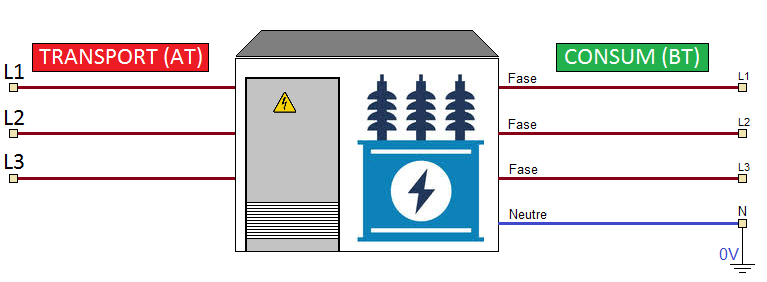

Subministrament en Baixa Tensió
Les companyes elèctriques transporten l'energia en alta tensió utilitzant tres cables de fase però subministren l'energia en baixa tensió utilitzant 4 conductors: 3 conductors de fase + 1 conductor neutre.

Segons el Reglament Electrotècnic de Baixa Tensió (REBT), es considera baixa tensió aquella que és igual o inferior a 1000 volts en corrent altern (CA) o igual o inferior a 1500 volts en corrent continu (CC)